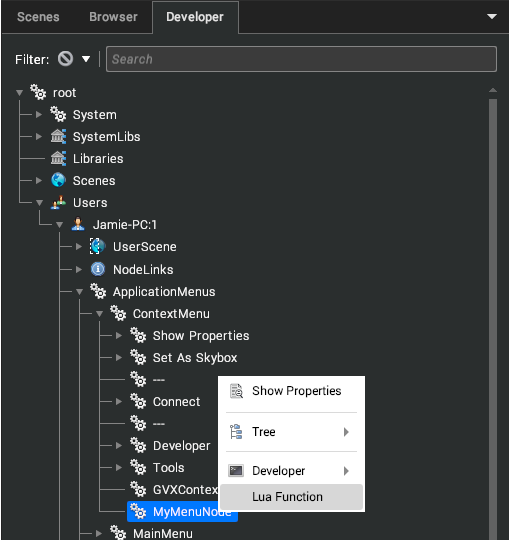

Add a Context Menu
Demonstrates how to insert context menu items and link them to plugin functions.
Introduction
A plugin may provide functionality triggered by context menu options.
Doing this involves creating menu entry nodes directly in the context menu tree.
The context menu is located in the local user's tree. This is visible in the Developer tree (with the User Interface / Advanced / Developer Admin Mode setting enabled).

Node Creation
The local user node (VRGetThisUser) contains the context menu, which is accessible by searching for "ApplicationMenus/ContextMenu" using VRFind.
From here, any nodes created will appear in the root of the menu. Menu nodes can be nested to create sub-menus.
The type of node to create is an ApplicationMenuEntry.
Example Code
local function init()
-- existing initialisation code...
-- get the menu root
local menuRoot = vrLocalUserNode():find("ApplicationMenus/ContextMenu")
-- create the entry directly - Lua operates in unversioned metanode names.
local menuItem = vrCreateNode("ApplicationMenuEntry", "MyMenuNode", menuRoot)
-- set the caption for the gui
menuItem.Caption = "Lua Function";
end
Setting up a Callback
Adding the menu function alone doesn't do a lot - it needs to be given a type and a command to execute.
For native plugins, this should be done with the Function type. For Lua, it should be done with the Lua type. These type options allow the Command property to be given the name of the function to call when the menu item is selected.
Native Callback
With the exception of Lua, the callback function should be registered using a unique name, with VRRegisterEventFunction.
This type of callback function does not receive any parameters. Instead it should read the registers set by the event system. For more details on the FFI, see Use the Foreign Function Interface (FFI).
Lua callbacks recieve the selected node in their first parameter. Native callbacks should read the selected node out of the __TargetNode register.
This function can then be referenced by name in the Command property on the menu node.
local function myCallback(node)
-- do things in response to menu execution
-- node was the one the context menu was summoned on...
end
local function init()
-- existing initialisation code...
menuItem.Type = __ApplicationMenuEntry_TypeLua -- types are Lua globals
menuItem.Command = "testplugin.myCallback" -- prefix our plugin name
end
return {
-- alongside existing exports
myCallback = myCallback
}
Other Callback Types
The Type property on the menu item has a few other values which allow more specific behaviour with no need for additional callbacks.
Type | Purpose |
|---|
TypeApp
| Triggers an application command specified in the Command property of the menu item. It may also pass a parameter specified by the UserString property of the menu item, if required. |
TypeLua
| Triggers a Lua function named in the Command property. It may also pass a parameter specified by the UserString property, if required. |
TypeLuaBlock
| Executes a block of Lua code specified in the Command property |
TypePropertyToggle
| Toggles the value of the property named in the Command property (must be a boolean property), on the node at the path specified in the UserString property. The path is relative to this menu node. |
TypeSettingToggle
| Toggles the value of the setting referenced by the UserString property (must be a boolean setting). |
TypeActivate
| Triggers an Activate event on the menu node itself, executing any attached EventHandler nodes with events set to Event_Activate |
TypeFunction
| Calls a named function registered with the script engine (VRRegisterEventFunction) |